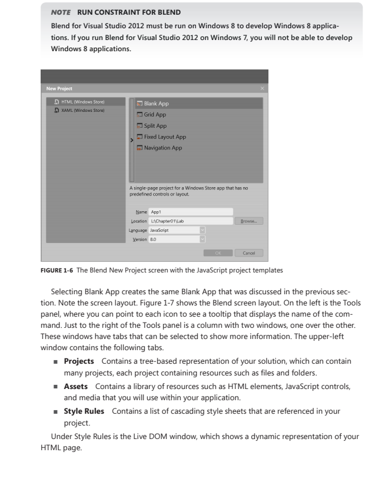

Which panel can you use to access a list of the HTML elements, controls, and media that can be added to an HTML page that is open in the artboard?
- Projects
- Assets
- Device
- Live DOM
solucion: Assets
Explanation/Reference:
Entiendo que es una pregunta OBSOLETA porque se refiere a la herramiente BLEND.
Tras Visual Studio 2010 Microsoft aposto por separar tareas de desarrollo y tareas de diseño y utilizaba para ello esta herramienta
No creo que salga
De todas formas por lo que dicen..
list of the HTML elements, controls, and media that can be added
Projects suena a proyectos de la solcución,
Live Dom suena a algo así como nuestro Live Server
Device suena a algo así como emulador de phone, pantalla,...
Assets se traduce como Bienes... pues sería esta
References: http://www.daoudisamir.com/references/vs_ebooks/html5_css3.pdf"
